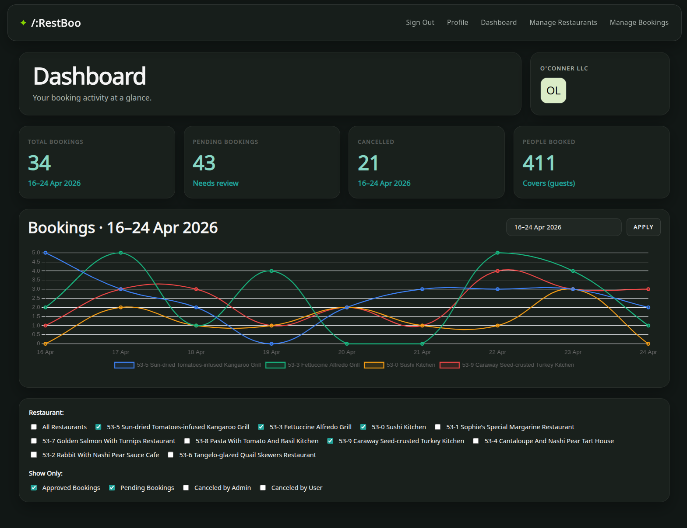

Featured Project
RestBoo
Role: Lead Front-End Engineer
RestBoo is a large-scale restaurant booking and management platform built for customers, restaurant partners, staff, and administrators. I built and owned the complete front-end experience, working within a multi-developer team while taking responsibility for the user-facing side of the application.
The platform includes restaurant discovery, booking flows, profile management, dashboards, messaging, image uploads, map-based features, authentication, and role-based interfaces. My focus was on creating clear user journeys across a complex multi-role product.
- Built customer, restaurant partner, staff, and administrator interfaces
- Implemented booking, messaging, profile, dashboard, and administration workflows
- Integrated REST APIs, authentication, image uploads, and map-based functionality
- Designed responsive, role-based user experiences across the platform
